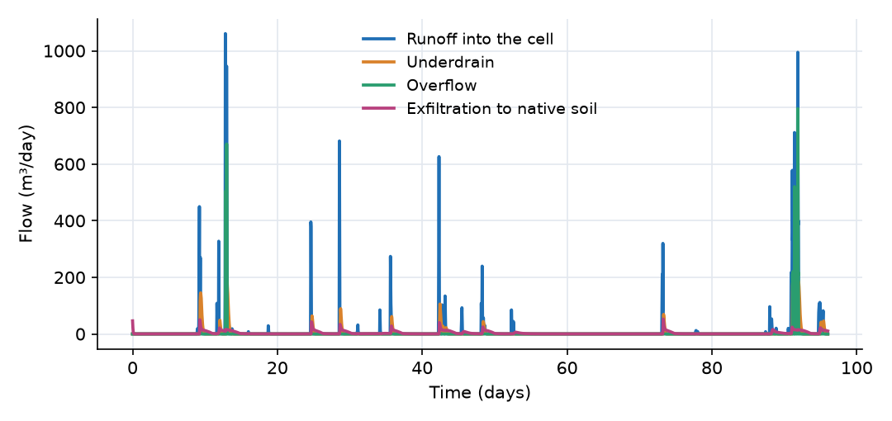
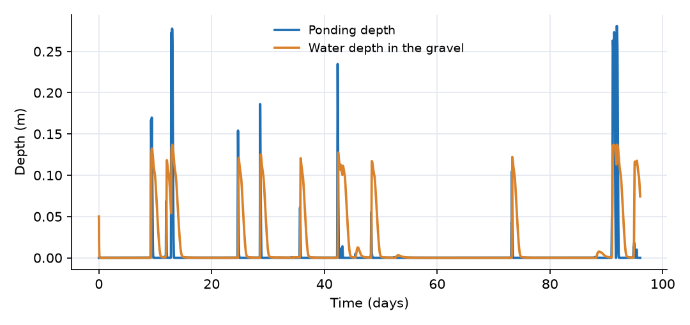
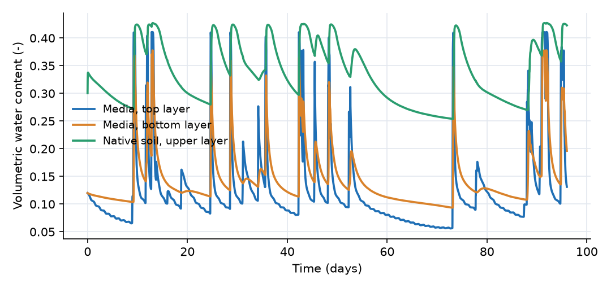
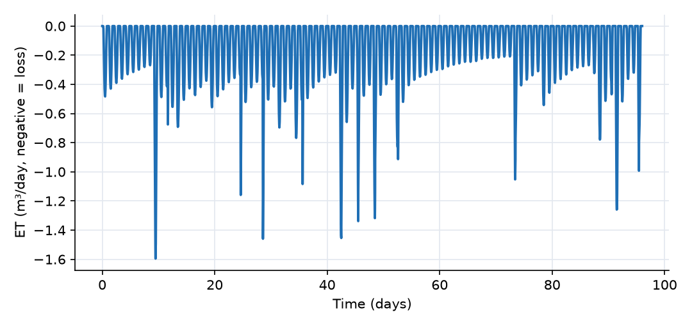

What this model represents
A bioretention cell (rain garden) is a shallow vegetated depression filled with a sandy engineered soil. It receives runoff from an adjacent impervious area, holds it briefly on the surface, and filters it through the media. Below the media, a gravel layer stores water and drains through a perforated underdrain. Water held in the gravel below the underdrain invert (internal water storage) can only leave by exfiltration into the native soil, which increases volume reduction and groundwater recharge.
The model is a single cell sized at 5% of its impervious drainage area, driven by 96 days of hourly summer and early autumn rainfall and weather from BWI airport (Maryland, USA). It produces the full water budget of the cell: how much runoff is returned to the storm sewer through the underdrain, how much bypasses as overflow, how much infiltrates into the native soil, and how much evaporates.
How it works
Runoff and ponding. The Parking_Area (Catchment) turns rainfall into sheet flow, Q = 86400·(W/n)·S₀^0.5·h^(5/3) m³/day, where h is the water depth on the pavement. The Ponding_Zone is a Pond block with S = α·d^β and β = 1, which makes it a prism with a constant area α = 100 m²: depth d = S/100 m (OpenHydroQual evaluates d = S²/(α(S + 0.1)), which differs only for nearly empty storage), and rain falls on its full 100 m². The Overflow weir returns water to the storm sewer when the ponding depth exceeds 0.25 m.
Variably saturated media and soil. Each Soil block holds water S = θ·A·D (θ = water content, A = 100 m², D = layer thickness). The effective saturation and pressure head follow van Genuchten:
Se = (θ − θ_r)/(θ_s − θ_r), limited to 0.001 to 0.999 ψ = −(1/α)·(Se^(−1/m) − 1)^(1/n), m = 1 − 1/n
When θ exceeds 99.9% of saturation, additional water builds positive pressure through the specific storage (0.01 1/m). The hydraulic head of a block is H = z_bottom + D + ψ, that is, it is referenced to the top of the block. Flow between two stacked layers (soil_to_soil_link) is Darcy flow with a Mualem conductivity:
Q = K_eff · (H_upper − H_lower) / L · A K_eff = K_sat · [1 − (1 − Se^(1/m))^m]²
where L is the mean of the two thicknesses, K_sat is the smaller of the two, and Se is that of the wetter block.
Pond to media. Infiltration (surfacewater_to_soil_link) uses the saturated conductivity of the top layer:
Q = (H_pond − H_media1) · K_sat / (D₁/2) · min(A_pond, A_media) · d/(d + 0.001)
so infiltration stops smoothly as the ponding zone empties. With ψ strongly negative in dry media, the suction adds to the driving head at the start of a storm.
Media to gravel. Media_to_Gravel (soil_to_aggregate_link) is Q = (H_media3 − H_gravel)·K_eff/(D₃/2)·A, with K_eff from the media saturation. The gravel (Aggregate_storage_layer) has head H_gravel = −0.9 m + h_g, where h_g = S/(0.4·A) is the water depth in the gravel.
Underdrain. The Underdrain is a Sewer_pipe link. It computes Manning flow for a partly full circular pipe whose upstream depth is min((H_gravel − z_invert)₊, D_pipe), with z_invert = −0.8 m:
Q = 86400 · (ΔH/L)^0.5 / n · A_flow · R_h^(2/3)
so there is no underdrain flow while the gravel water depth is below 0.1 m. The storm sewer head (−1.5 m) is below the pipe outlet (−1.0 m), so the pipe discharges freely.
Exfiltration and recharge. Exfiltration (aggregate_to_soil_link) is Q = (H_gravel − H_native1)·K_sat,native/(D/2)·A·h_g/(h_g + 0.01), which uses the saturated native-soil conductivity and stops as the gravel empties. Recharge (soil_to_fixedhead_link) carries water from the lower native layer to the water table with Q = (H_native2 − H_wt)·K_eff/(D/2)·A.
Evapotranspiration. Penman_ET (type Evapotranspiration_Penman (Soil)) withdraws water from Media_1 at
ET = A · (θ/θ_s) · (Δ·E_r + γ·E_a)/(Δ + γ) (m³/day, negative)
with a radiation term E_r = −f_s·R_s·86400/(λ_v·1000) (m/day; R_s in W/m², λ_v = 2,501,000 − 2,370·T J/kg, f_s = 0.5), an aerodynamic term E_a = B·e_s·(RH − 1) with B = 0.000102·u/[ln(z₂/z₀)]², e_s = 611·exp(17.27T/(237.3 + T)) Pa, z₂ = 10 m, z₀ = 0.0003 m, γ = 66.8 Pa/°C, and the slope of the saturation vapour pressure curve
Δ = 4098 · e_s / (237.3 + T)² (Pa/°C)
This is the standard Penman combination of an energy term and a drying-power term, each weighted by its share of Δ + γ. At 25 °C, Δ ≈ 189 Pa/°C, so the radiation term carries about 74% of the weight and the aerodynamic term about 26%. The aerodynamic term grows with wind speed u and with the vapour pressure deficit e_s·(1 − RH). The factor θ/θ_s reduces ET as the layer dries.
What to look for in the results
- Water budget. Over 96 days, 370.6 mm of rain falls on the 2,100 m² of parking area and cell, 778 m³ in total. The cell receives 738 m³ of runoff and 37 m³ of direct rain. The storm sewer receives 484 m³ (62%): about 357 m³ through the underdrain (46%) and about 127 m³ as overflow (16%). About 275 m³ (35%) exfiltrates into the native soil, of which 263 m³ reaches the water table by the end of the run. Evapotranspiration removes 14 m³ (1.8%), and the media, gravel and native soil hold 16 m³ more water at the end than at the start. The storage changes, boundary inflows and ET balance the rainfall to within 0.1%.
- Overflow only in large storms. The ponding depth reaches the 0.25 m crest only in the 47 mm storm on day 12 and the 118 mm storm on day 91, when the runoff rate exceeds what the media can take in. All other storms are fully treated.
- Short ponding. In most storms the ponding zone empties within a few hours of the end of the rain, because the media conducts 1.5 m/day when saturated.
- Internal water storage. The gravel water level rises to 0.12 to 0.14 m in most storms, so the underdrain flows for only about 7 days in total. Between storms the 0.1 m below the invert drains slowly into the native soil.
- Fast media, slow native soil. The media moisture swings between near-residual (0.06) and saturation (0.41). The native loam stays between 0.25 and 0.43 and drains more slowly, which limits exfiltration.
- Evapotranspiration. ET averages 1.5 mm/day over the cell. It reaches 2 to 3 mm/day in the day or two after a storm and falls to about 1 mm/day or less after a week without rain, as the top layer dries toward its residual water content. ET is limited by the water in the top layer more than by the weather: the potential rate on a summer day is several mm/day.
Assumptions and limitations
- The cell is one-dimensional: flow is vertical only, and the native soil below the cell has the same area as the cell. Lateral exfiltration through the side walls is not represented.
- The ponding zone has vertical sides, so its surface area does not grow with depth.
- Four media and soil layers are a coarse discretization of the vertical profile. Finer layers resolve wetting fronts better at a higher computing cost.
- The head of each soil block is referenced to its top. At the link from the native soil to the water table, which uses half a block thickness as its length, this makes the gravity gradient 2 (twice that of a cell-centred formulation) when the bottom block is saturated. At the pond-to-media link it has the opposite effect: the gravity term over the top half layer is left out, and infiltration is driven by ponding depth and suction alone.
- The radiation term uses half of the incoming solar radiation as available energy (f_s = 0.5), a simple stand-in for net radiation and soil heat flux. Evapotranspiration is taken only from the top 0.2 m, with no explicit root uptake or plant water stress, and it can dry the top layer to its residual water content.
- The parking area has no depression storage or losses. Runoff water quality is not modelled.
- Soil hydraulic parameters are textbook values for a loamy sand media and a loam native soil, not site measurements. The media conductivity is set lower than that of a new loamy sand to represent some clogging.
Model diagram
Hover a block or link to see its name and type. Arrows show the positive flow direction.
Components
Click a component to see every property set in the model file, with units and meaning.
Blocks 10
Storage compartments: each holds water (and dissolved or particulate mass) and has a state that evolves in time.
Parking_AreaCatchmentImpervious drainage area of 2,000 m² (40 m wide, 50 m flow length, slope 0.02, Manning's n 0.015), 20 times the cell footprint. No losses: all rain becomes runoff into the cell.
Catchment: Catchment
| Property | Value | Unit | Meaning |
|---|---|---|---|
| Catchment area | 2000 | m2 | Total horizontal surface area of the catchment. Used to compute initial storage and flow-related parameters. |
| The width of the catchment | 40 | m | The average width of the catchment perpendicular to the dominant flow direction |
| Catchment slope in the direction of flow | 0.02 | The average slope of the catchment along the dominant flow direction | |
| Manning's Roughness Coefficient | 0.015 | The Manning's roughness coefficient representing surface resistance to flow. Typical values vary by land cover type. | |
| Runoff coefficient | 1 | This is the fraction of rain that converts to runoff in case infiltration is not explicitly modeled | |
| Depression storage | 0 | m | The depth of water that is retained in surface depressions and does not contribute to surface runoff. |
| Average water depth | 0 | m | The initial depth of the standing water before the simulation start time. Most of the times, this value is zero |
| Mean elevation of the catchment | 0.5 | m | The elevation of the centroid of the catchment based on the model datum. |
| Loss coefficient | 0 | 1/day | A coefficient representing losses (e.g., infiltration or leakage) as a first-order rate constant. Used in loss expression. |
| Precipitation | Rain | m^3/day | A precipitation source object must be selected. |
Ponding_ZonePond · Pond_PluginSurface storage of the cell, a prism with a 100 m² floor at elevation 0 m (the media surface). Receives runoff and the rain that falls directly on the cell.
Pond: Stormwater pond
| Property | Value | Unit | Meaning |
|---|---|---|---|
| Initial Storage | 0 | m3 | Initial volume of water stored in the pond at the beginning of the simulation. |
| The coefficient (α) in the rating curve S = α d^β | 100 | The coefficient (α) in the pond volume-depth relationship: Storage = alpha * depth^beta. | |
| Alpha multiplier - This number is multiplied by alpha parameter (for calibration of multiple ponds) | 1 | The coefficient (α) in the pond volume-depth relationship: Storage = alpha * depth^beta. | |
| The exponent (β) in the rating curve S = α d^β | 1 | The exponent (β) in the pond volume-depth relationship: Storage = alpha * depth^beta. | |
| Bottom elevation of pond | 0 | m | |
| precipitation time series | Rain | m^3/day | Select a precipitation source object that provides rainfall input to the pond. |
Media_1Soil · unsaturated_soilTop 0.2 m of the engineered media (loamy sand: K_sat 1.5 m/day, θ_s 0.41, θ_r 0.057, α 12.4 1/m, n 2.28). Evapotranspiration is withdrawn from this layer.
Soil: Variably Saturated Soil Block
| Property | Value | Unit | Meaning |
|---|---|---|---|
| Bottom Area of the soil block | 100 | m2 | Bottom Area of the soil block |
| Depth of the soil block | 0.2 | m | Depth of the soil block |
| Bottom Elevation of the soil block | -0.2 | m | Bottom Elevation of the soil block |
| Initial Moisture Content | 0.12 | Initial Moisture Content; Moisture Content | |
| Saturated Moisture Content | 0.41 | Saturated Moisture Content | |
| Residual Moisture Content | 0.057 | Residual Moisture Content | |
| Van Genuchten's alpha parameter | 12.4 | 1/m | Van Genuchten's alpha parameter |
| Van Genuchten's n parameter | 2.28 | Van Genuchten's n parameter | |
| Saturated Hydraulic Conductivity | 1.5 | m/day | Saturated Hydraulc Conductivity |
| Hydraulic conductivity scale factor | 1 | Hydraulic conductivity scale factor | |
| Specific storage | 0.01 | 1/m | Specific storage |
| Anisotropy ratio Kx/Ky | 1 | Anisotropy ratio Kx/Ky | |
| Evapotranspiration | Penman_ET | m^3/day | Evapotranspiration |
Media_2Soil · unsaturated_soilMiddle 0.2 m of the engineered media, same properties as Media_1.
Soil: Variably Saturated Soil Block
| Property | Value | Unit | Meaning |
|---|---|---|---|
| Bottom Area of the soil block | 100 | m2 | Bottom Area of the soil block |
| Depth of the soil block | 0.2 | m | Depth of the soil block |
| Bottom Elevation of the soil block | -0.4 | m | Bottom Elevation of the soil block |
| Initial Moisture Content | 0.12 | Initial Moisture Content; Moisture Content | |
| Saturated Moisture Content | 0.41 | Saturated Moisture Content | |
| Residual Moisture Content | 0.057 | Residual Moisture Content | |
| Van Genuchten's alpha parameter | 12.4 | 1/m | Van Genuchten's alpha parameter |
| Van Genuchten's n parameter | 2.28 | Van Genuchten's n parameter | |
| Saturated Hydraulic Conductivity | 1.5 | m/day | Saturated Hydraulc Conductivity |
| Hydraulic conductivity scale factor | 1 | Hydraulic conductivity scale factor | |
| Specific storage | 0.01 | 1/m | Specific storage |
| Anisotropy ratio Kx/Ky | 1 | Anisotropy ratio Kx/Ky |
Media_3Soil · unsaturated_soilBottom 0.2 m of the engineered media, same properties as Media_1. Drains into the gravel.
Soil: Variably Saturated Soil Block
| Property | Value | Unit | Meaning |
|---|---|---|---|
| Bottom Area of the soil block | 100 | m2 | Bottom Area of the soil block |
| Depth of the soil block | 0.2 | m | Depth of the soil block |
| Bottom Elevation of the soil block | -0.6 | m | Bottom Elevation of the soil block |
| Initial Moisture Content | 0.12 | Initial Moisture Content; Moisture Content | |
| Saturated Moisture Content | 0.41 | Saturated Moisture Content | |
| Residual Moisture Content | 0.057 | Residual Moisture Content | |
| Van Genuchten's alpha parameter | 12.4 | 1/m | Van Genuchten's alpha parameter |
| Van Genuchten's n parameter | 2.28 | Van Genuchten's n parameter | |
| Saturated Hydraulic Conductivity | 1.5 | m/day | Saturated Hydraulc Conductivity |
| Hydraulic conductivity scale factor | 1 | Hydraulic conductivity scale factor | |
| Specific storage | 0.01 | 1/m | Specific storage |
| Anisotropy ratio Kx/Ky | 1 | Anisotropy ratio Kx/Ky |
Gravel_StorageAggregate_storage_layer · Pond_PluginGravel layer below the media (floor at −0.9 m, porosity 0.4). Water collects here; the 0.1 m below the underdrain invert is an internal water storage zone that can leave only by exfiltration. Starts with 0.05 m of water.
Aggregate_storage_layer: Aggregate zone
| Property | Value | Unit | Meaning |
|---|---|---|---|
| Base Area | 100 | m2 | |
| Bottom Elevation | -0.9 | m | |
| Initial Water Depth | 0.05 | m | This is the initial depth of water in the aggregate layer |
| Porosity | 0.4 | ||
| Saturated Hydraulc Conductivity | 100 | m/day |
Native_Soil_1Soil · unsaturated_soilUpper 0.5 m of the native soil below the cell (loam: K_sat 0.25 m/day, θ_s 0.43, θ_r 0.078, α 3.6 1/m, n 1.56).
Soil: Variably Saturated Soil Block
| Property | Value | Unit | Meaning |
|---|---|---|---|
| Bottom Area of the soil block | 100 | m2 | Bottom Area of the soil block |
| Depth of the soil block | 0.5 | m | Depth of the soil block |
| Bottom Elevation of the soil block | -1.4 | m | Bottom Elevation of the soil block |
| Initial Moisture Content | 0.3 | Initial Moisture Content; Moisture Content | |
| Saturated Moisture Content | 0.43 | Saturated Moisture Content | |
| Residual Moisture Content | 0.078 | Residual Moisture Content | |
| Van Genuchten's alpha parameter | 3.6 | 1/m | Van Genuchten's alpha parameter |
| Van Genuchten's n parameter | 1.56 | Van Genuchten's n parameter | |
| Saturated Hydraulic Conductivity | 0.25 | m/day | Saturated Hydraulc Conductivity |
| Hydraulic conductivity scale factor | 1 | Hydraulic conductivity scale factor | |
| Specific storage | 0.01 | 1/m | Specific storage |
| Anisotropy ratio Kx/Ky | 1 | Anisotropy ratio Kx/Ky |
Native_Soil_2Soil · unsaturated_soilLower 0.5 m of the native soil, same properties, resting on the water table.
Soil: Variably Saturated Soil Block
| Property | Value | Unit | Meaning |
|---|---|---|---|
| Bottom Area of the soil block | 100 | m2 | Bottom Area of the soil block |
| Depth of the soil block | 0.5 | m | Depth of the soil block |
| Bottom Elevation of the soil block | -1.9 | m | Bottom Elevation of the soil block |
| Initial Moisture Content | 0.3 | Initial Moisture Content; Moisture Content | |
| Saturated Moisture Content | 0.43 | Saturated Moisture Content | |
| Residual Moisture Content | 0.078 | Residual Moisture Content | |
| Van Genuchten's alpha parameter | 3.6 | 1/m | Van Genuchten's alpha parameter |
| Van Genuchten's n parameter | 1.56 | Van Genuchten's n parameter | |
| Saturated Hydraulic Conductivity | 0.25 | m/day | Saturated Hydraulc Conductivity |
| Hydraulic conductivity scale factor | 1 | Hydraulic conductivity scale factor | |
| Specific storage | 0.01 | 1/m | Specific storage |
| Anisotropy ratio Kx/Ky | 1 | Anisotropy ratio Kx/Ky |
Water_Tablefixed_headGroundwater, a fixed head at −1.9 m (the bottom of the native soil column). Collects deep recharge.
fixed_head: Fixed-head boundary
| Property | Value | Unit | Meaning |
|---|---|---|---|
| Head | -1.9 | m | |
| Initial Storage | 100000 | m3 | |
| area | 1 | m2 |
Storm_Sewerfixed_headFixed-head boundary at −1.5 m representing the storm drain that receives the underdrain and the overflow.
fixed_head: Fixed-head boundary
| Property | Value | Unit | Meaning |
|---|---|---|---|
| Head | -1.5 | m | |
| Initial Storage | 100000 | m3 | |
| area | 1 | m2 |
Links 10
Connections that move water (and the mass it carries) between blocks.
RunoffCatchment_linkKinematic-wave sheet flow from the parking area into the ponding zone. Always positive (into the cell).
Catchment_link: Link from a catchment
Overflowwier · Pond_PluginOverflow weir from the ponding zone to the storm sewer, crest 0.25 m above the media surface, Q = 146,880·(H − 0.25)^1.5 m³/day (a 1 m long weir with C = 1.7 m^0.5/s).
wier: Weir based on a power-law rating curve
| Property | Value | Unit | Meaning |
|---|---|---|---|
| Crest Elevation | 0.25 | m | |
| Coefficient alpha in Q=alpha*(h-z_0)^beta (SI-day units) | 146880 | ||
| Exponent beta in Q=alpha*(h-z_0)^beta | 1.5 |
Infiltrationsurfacewater_to_soil_link · unsaturated_soilFlow from the ponding zone into the top media layer. Positive downward.
surfacewater_to_soil_link: Surfacewater to soil connector
Media_1_to_2soil_to_soil_link · unsaturated_soilUnsaturated flow between media layers 1 and 2. Positive downward.
soil_to_soil_link: Vertical soil to soil connector
Media_2_to_3soil_to_soil_link · unsaturated_soilUnsaturated flow between media layers 2 and 3. Positive downward.
soil_to_soil_link: Vertical soil to soil connector
Media_to_Gravelsoil_to_aggregate_link · Pond_PluginDrainage from the bottom media layer into the gravel. Positive downward.
soil_to_aggregate_link: Soil to aggregate layer link
UnderdrainSewer_pipe · Sewer_systemPerforated pipe (0.1 m diameter, 10 m long, n 0.013) from the gravel to the storm sewer, invert at −0.8 m (0.1 m above the gravel floor). Flows only when the gravel water level is above the invert.
Sewer_pipe: Sewer pipe
| Property | Value | Unit | Meaning |
|---|---|---|---|
| Diameter | 0.1 | m | Diameter (user input required). |
| Manning's roughness coefficient | 0.013 | m | Manning's roughness coefficient (user input required). |
| Pipe length | 10 | m | Pipe length (user input required). |
| Start elevation | -0.8 | m | Start elevation (user input required). |
| End elevation | -1.0 | m | End elevation (user input required). |
Exfiltrationaggregate_to_soil_link · Pond_PluginFlow from the gravel into the native soil. Positive downward.
aggregate_to_soil_link: Aggregate layer to soil link
Native_1_to_2soil_to_soil_link · unsaturated_soilUnsaturated flow between the two native soil layers. Positive downward.
soil_to_soil_link: Vertical soil to soil connector
Rechargesoil_to_fixedhead_link · unsaturated_soilFlow from the native soil to the water table. Positive downward.
soil_to_fixedhead_link: Soil to fixed head connector
Sources 2
External inputs or sinks applied to blocks: rainfall, evaporation, loads, exchange with the atmosphere.
RainPrecipitationHourly rainfall at BWI airport, Maryland, 1 July to 4 October 2010, applied to the parking area and to the ponding zone.
Precipitation: Precipitation
| Property | Value | Unit | Meaning |
|---|---|---|---|
| Precipitation Cumulative | rainfall.txt | m |
Penman_ETEvapotranspiration_Penman (Soil) · soil_evapotranspiration_modelsPenman-type evapotranspiration from the top media layer, driven by hourly air temperature, relative humidity, solar radiation and wind speed, with half of the incoming solar radiation taken as available energy. Uses the standard Penman combination equation.
Evapotranspiration_Penman (Soil): Penman Evapotranspiration model for soil
| Property | Value | Unit | Meaning |
|---|---|---|---|
| Temperature time series (°C) | air_temperature.csv | ||
| Relative humidity time series (fraction, 0-1) | relative_humidity.csv | ||
| Solar Radiation (W/m^2) | solar_radiation.csv | ||
| wind time series | wind_speed.csv | m/s | |
| Solar radiation scale factor | 0.5 | ||
| Wind scale factor | 1 | ||
| Wind measurement elevation | 10 | m | |
| Roughness height | 0.0003 | m | |
| psychrometric constant (Pa/C) | 66.8 |
Input files
rainfall.txt | Rainfall in the three-column precipitation format: interval start (day), interval end (day), rainfall depth in the interval (m). Hourly intervals; day 0 is 1 July 2010; dry hours are omitted. Source: NOAA hourly precipitation record at Baltimore/Washington International Airport (BWI), Maryland, USA (US public domain, 0.01 in = 0.254 mm resolution). |
air_temperature.csv | Air temperature (°C) versus time (day, day 0 = 1 July 2010), roughly hourly. Hourly weather record at BWI airport, Maryland, USA. |
relative_humidity.csv | Relative humidity as a fraction (0 to 1) versus time (day). Hourly weather record at BWI airport, Maryland, USA. |
solar_radiation.csv | Incoming solar radiation (W/m²) versus time (day), every 30 minutes. Weather record at BWI airport, Maryland, USA. |
wind_speed.csv | Wind speed (m/s) versus time (day). Hourly NOAA NCDC Local Climatological Data for BWI airport, Maryland, USA, reported in mph at the 10 m anemometer height and converted to m/s (×0.447). |
Simulation settings
| Start time | 0 |
| End time | 96.0 |
| Initial time step | 0.001 |
| Write interval (steps) | 10 |
Results
Produced by running the downloaded model unchanged.



